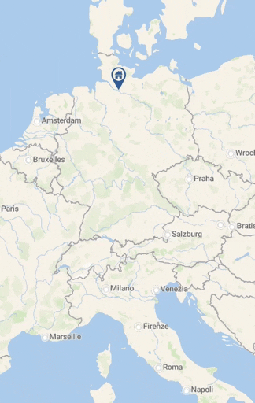
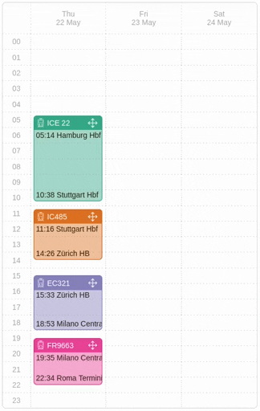

...
weitere Halte
...
additional stops
Umstiegszeit:
Transfer time:
Config
Search
Karte
Map
Kalendar
Adjust
Übersicht
Review
Wo soll's denn hingehen?
Where do you want to go? 🏖️ ⛰️ 🏛️
Von
From
Nach
To
Am
Date
Los geht's!
Take me there!
Reiseplanung neu gedacht
Reimagining travel planning
Reiseziel auf Karte auswählen
Choose destination from the map

Reise per Drag&Drop anpassen
Modify trip via Drag&Drop

Blog: Warum Reiseplanung neu denken?
Blog: Why reimagine travel planning?
Wo soll deine Zugreise starten?
Where should your train trip start?
Berlin
Hamburg
Köln
München
Weitere Städte bald verfügbar
Additional cities soon available
Ausprobieren!
Try it out!
Der Trans Europa Planer ist zurzeit noch ein Prototyp.
Mehr erfahren.
The Trans Europe Planner is still just a prototype.
Learn more.